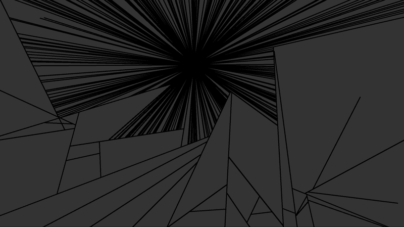
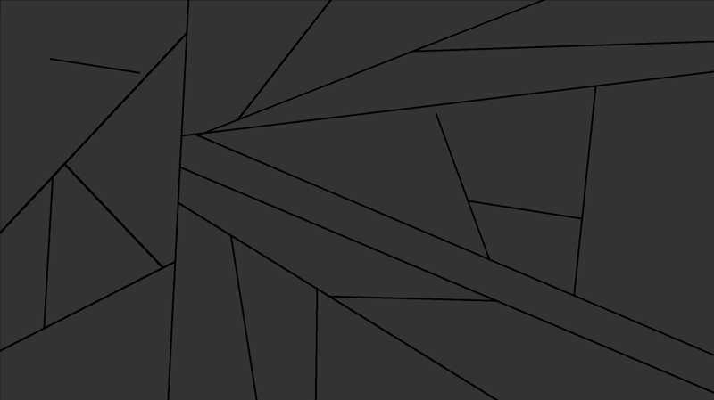

Die erste Idee entstand aus Inspiration durch verschiedene Techniken der Raumtesselierung und -aufteilung. Vor allem in moderner Architektur werden diese Techniken häufig genutzt.
Die ersten Zeichnungen beschäftigten sich grob mit dem Thema der Bildeinteilung/Tesselierung.
Sehr schnell hat sich gezeigt, dass ich in dieser Visualisisierung mit den primitivsten geometrischen Formen (Punkte und Linien) arbeiten möchte. Aus diesen rudimentären Bauteilen lassen sich leicht komplexe Formen bilden, was zum Thema des Ornaments passt. Nach weiterer Überlegung erstellte ich ein Regelwerk nachdem die Animationen ablaufen sollen:
Mit diesem Regelwerk grenze ich die Arbeit soweit ein, dass ein grundliegendes Thema entsteht und trotzdem Raum für Zufall und Experimente bleibt.
Hier sieht man die ersten Bilder, der grundsätzlichen Bildaufteilung.
Die Demo sollte möglichst einfach gehalten werden, weshalb ich, anders als bei den Testbildern, einen schwarzen Hintergrund wählte. Schwarz hat im Hinblick auf den Einsatz von Beamern einen großen vorteil, weil die Ränder der Projektion nicht zu sehen sind. Dadurch eintsteht der Eindruck, dass sich die Animation nahtlos in die Umgebung einfügt. Der Funkenefekt der Partikel bildet dabei Analogien zu Feuerwerk, das normalerweise auf dunklem Nachthimmel zu sehen ist.
 Die Vordergrundfarbe, und somit die Farbe der Linien, war durch das Farbrad vorgegeben und damit sich die Funken davon abheben wählte ich dafür die jeweilige Komplementärfarbe. Die Fertige Demo kann unter "Video" angesehen werden.